Chapter 2 Module 1
2.1 1A. Introduction to Data Visualization
We will practice plotting data using the iris dataset.
data(iris) # load data (already exists in base R)head(iris)## Sepal.Length Sepal.Width Petal.Length Petal.Width Species
## 1 5.1 3.5 1.4 0.2 setosa
## 2 4.9 3.0 1.4 0.2 setosa
## 3 4.7 3.2 1.3 0.2 setosa
## 4 4.6 3.1 1.5 0.2 setosa
## 5 5.0 3.6 1.4 0.2 setosa
## 6 5.4 3.9 1.7 0.4 setosa2.1.1 Continuous Variables
2.1.1.1 Scatterplots with base R
Plotting sepal length by width
plot(Sepal.Length~Sepal.Width, data=iris)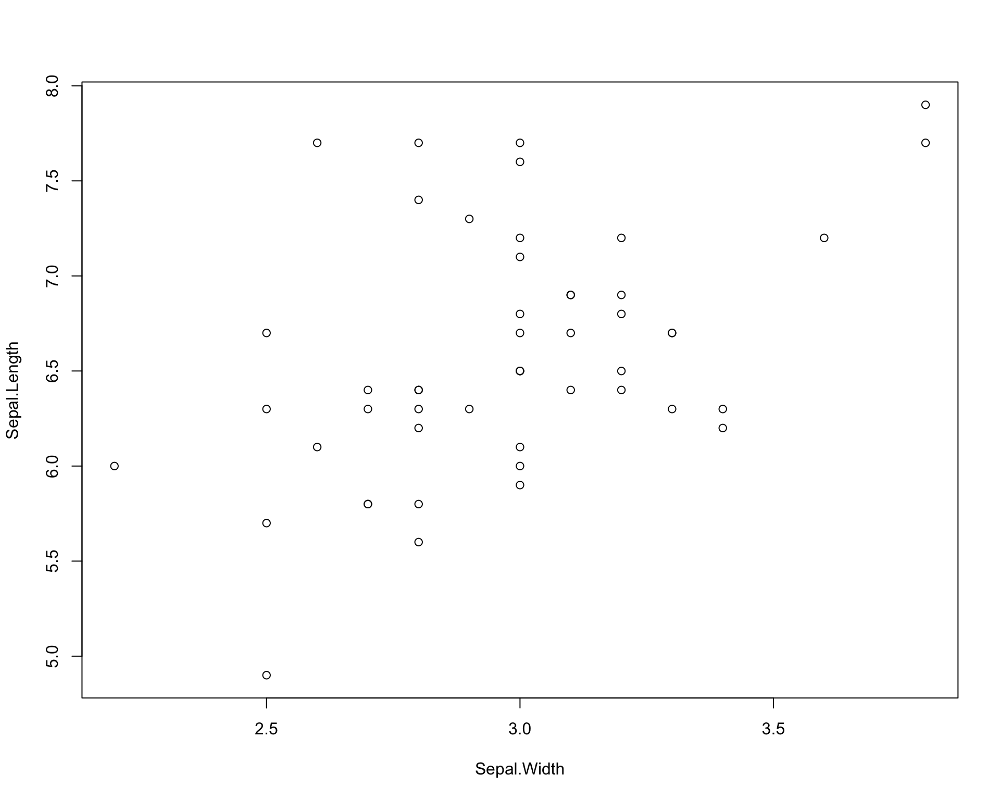
Specify colors using the “col =” argument within the plot function wrapper.
plot(Sepal.Length~Sepal.Width, data=iris, col="blue")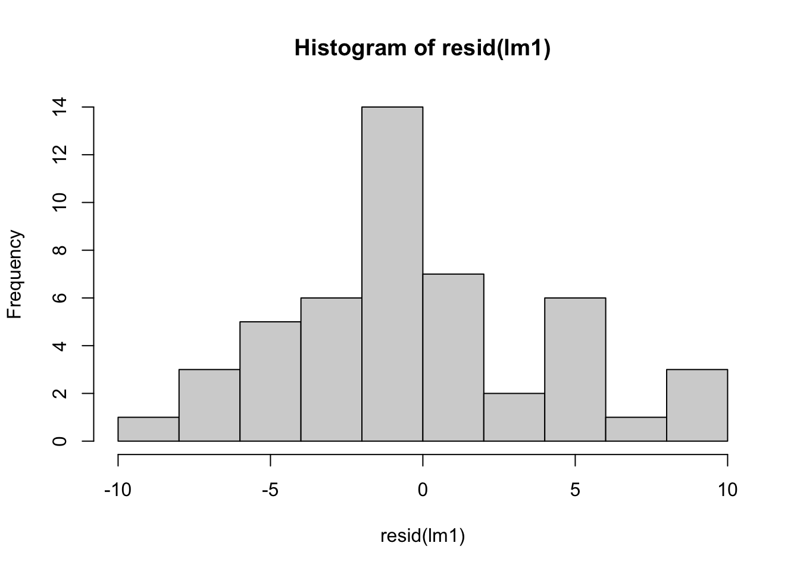
We can get more complex by specifying solid dots with separate colors for each species.
plot(Sepal.Length~Sepal.Width, data=iris,
pch=16, col=c("red","blue","purple")[iris$Species] ) 
We can specify to plot only one species by editing the “data=” argument. The “==” in the code means “exactly equals.” Using just “=” will not work.
### plot only the data for Iris virginica
plot(Sepal.Length~Sepal.Width, data=iris[iris$Species=='virginica',]) ## use brackets to select the columns you want
Finally, we can add a standard linear trendline across the data.
plot(Sepal.Length~Sepal.Width, data=iris[iris$Species=='virginica',])
abline(lm(Sepal.Length~Sepal.Width,
data=iris[iris$Species=='virginica',])) ## adds line from lm
2.1.1.2 Scatterplots with ggplot2
We need the tidyverse package to use ggplot2.
library(tidyverse) ## install tidyverse if necessaryLet’s start with a simple plot of sepal length by width
ggplot(data=iris,
aes(x=Sepal.Width,
y=Sepal.Length)) +
geom_point() 
We can also add colors to the points just liek base R using the “color =” argument within the geom_point function.
ggplot(data=iris, aes(x=Sepal.Width,
y=Sepal.Length)) + geom_point(color='blue') 
We can also color the points by species by including the “color =” argument within the aes() wrapper in the first ggplot line. aes() sets the aesthetics of the plot based on the data that is being used. The data is specified with the “data =.”
ggplot(data=iris, aes(x=Sepal.Width,
y=Sepal.Length,
color=Species)) +
geom_point() 
What if we want to see the different species in different plot panels? We can do this by using facet_wrap(). facet_wrap() allows you to facet the plot by a a categorical variable from the dataset. In the example below, we facet the plot above by species.
ggplot(data=iris, aes(x=Sepal.Width,
y=Sepal.Length,
color=Species)) +
geom_point() +
facet_wrap(~Species) 
Now finally let’s redo the plots we did in base R. Let’s first plot only one species. We can do this by manipulating the data set being used within the “data =” argument. We filter the original dataset “iris” so that only a specific species is being used in the plot.
ggplot(data=iris %>% filter(Species=='virginica'),
aes(x=Sepal.Width,
y=Sepal.Length)) +
geom_point() +
labs(title = "Plot with only Virginica") #we can add a title to the plot using the labs() and specifying the "title =" argument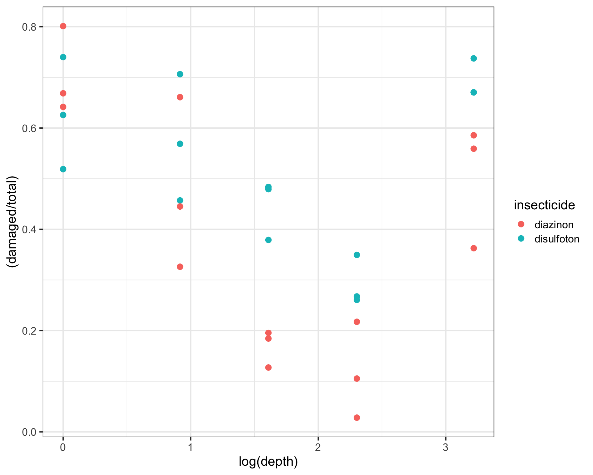
Now let’s plot the data with a linear trendline. To do this we use geom_smooth(). Within geom_smooth() we use the argument “method =” to specify the type of trendline. Since we want a linear one based on a linear model we use “lm.”
ggplot(data=iris %>% filter(Species=='virginica'),
aes(x=Sepal.Width,
y=Sepal.Length)) +
geom_point() +
geom_smooth(method='lm')
We can also add a separate trendline for all three species. ggplot2 can do this in a very user friendly way. By specifying different colors for different species in the first ggplot() line, the usage of geom_smooth() automatically applies the categorization by colors to the trendlines resulting in separate trendlines for each species.
ggplot(data=iris, aes(x=Sepal.Width,
y=Sepal.Length,
color=Species)) +
geom_point() +
geom_smooth(method='lm')
If we move the “color =” argument to the outside of the aes() and just specify a single color. it changes the colors of all points.
ggplot(data=iris, aes(x=Sepal.Width,
y=Sepal.Length)) +
geom_point(color="blue") +
facet_wrap(~Species) +
geom_smooth(method='lm')
2.1.2 Fancy Scatterplots
For more appealing color options we use the viridis package
library(viridis) ## install viridis package if necassaryLet’s set up a basic plot from the examples shown above. The default colors work fine but could be better and the plot background could also be cleaner and more improved.
ggplot(data=iris, aes(x=Sepal.Width,
y=Sepal.Length, color=Species)) +
geom_point() +
geom_smooth(method='lm')
We can change the background elements of the plot (a.k.a the “theme”) with preset defaults such as theme_bw()
ggplot(data=iris,
aes(x=Sepal.Width,
y=Sepal.Length,
color=Species)) +
geom_point() +
geom_smooth(method='lm') +
theme_bw()
We can also change the size of the points by adding a “size =” argument in the geom_point(). Also, the colors can be improved (e.g. making them more color-blind friendly) by using the scale_color_virdis(). Within the virdis function, we specify that we want a discrete color scale with “discreet = TRUE.”
ggplot(data=iris, aes(x=Sepal.Width,
y=Sepal.Length, color=Species)) +
geom_point(size=3) + # change point size to make them bigger
geom_smooth(method='lm') +
scale_color_viridis(discrete = TRUE) + # change points to a color-blind friendly palette. Can specify specific colors
theme_bw() # new theme
We can change the shapes of the points based on species with the “shape =” argument in the first ggplot() line. We specify that this argument equals “Species” which basically means, set different shapes for different species. We can further specify which shapes we want for the three species with the scale_shape_manual().
ggplot(data=iris, aes(x=Sepal.Width,
y=Sepal.Length,
shape=Species)) +
geom_point(size=3) +
geom_smooth(method='lm') +
scale_shape_manual(values=c("circle","square","triangle")) +
theme_bw()
Let’s specify with colors and shapes. Here’s an annotated code chunk to show exactly what components are being specified for the plot.
ggplot(data=iris, aes(x=Sepal.Width, #Sets x axis variable
y=Sepal.Length, #Sets y axis variable
shape=Species, #use different shapes for species
color=Species #use different colors for species
)) +
geom_point(size=3) + #set size if points
geom_smooth(method='lm') + #set a linear model trendline
scale_color_viridis(discrete=T) + #color palette
scale_shape_manual(values=c("circle","square","triangle")) + #specify which shapes
theme_bw() #different more black and white theme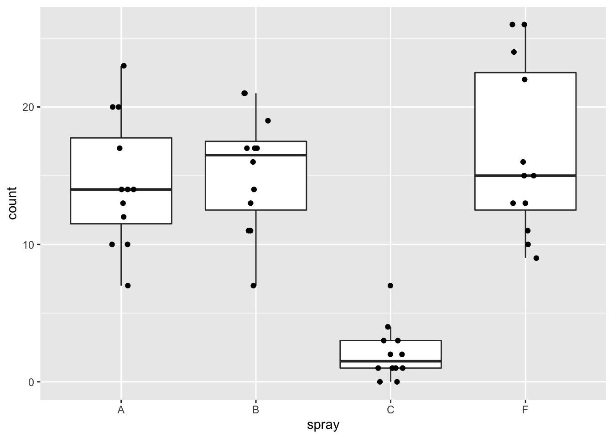
We can also facet the plot above and increase the font size
ggplot(data=iris, aes(x=Sepal.Width,
y=Sepal.Length,
shape=Species,
color=Species)) +
geom_point(size=3) +
geom_smooth(method='lm') +
scale_color_viridis(discrete=T) +
scale_shape_manual(values=c("circle","square","triangle")) +
facet_wrap(~Species) + #facet by species
theme_bw(base_size = 14) # increase font size for the entire plot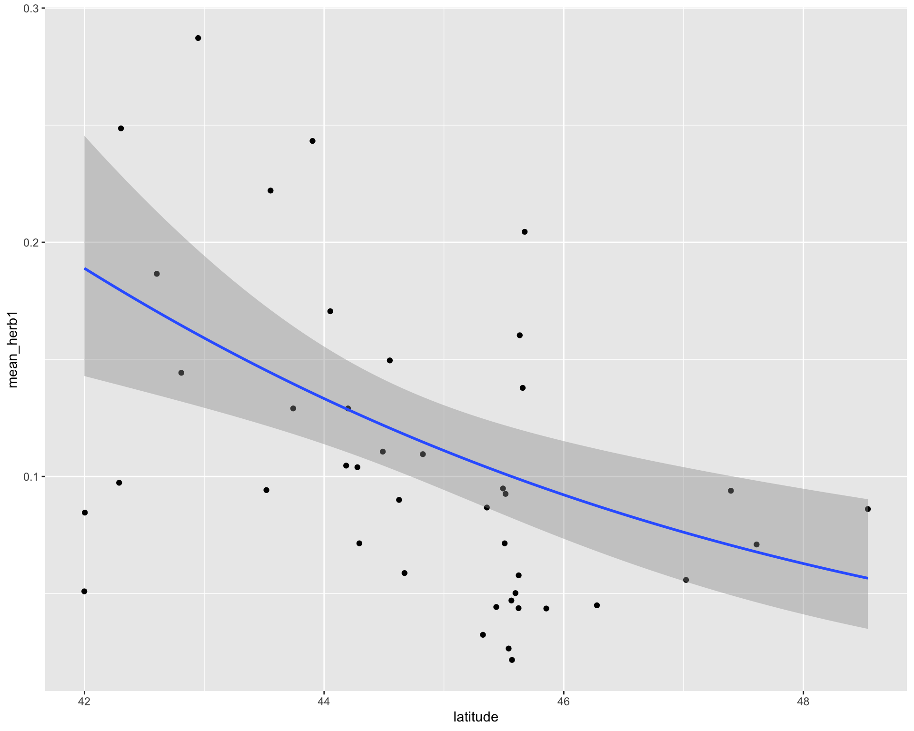
2.1.3 Continuous Variables
2.1.3.1 Boxplots with base R
This line of code will make a simple boxplot. Notice the usage of “~.” To avoid errors, make sure your continuous variable comes before “~” and your categorical variable comes after.
plot(Sepal.Length~Species, data=iris) #make boxplot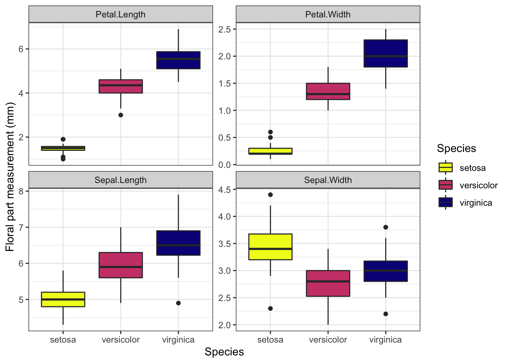
We can add colors to the different boxplots
plot(Sepal.Length~Species, data=iris, col=c("red","blue","purple")) #make boxplot with color
2.1.4 Different types of plots for categorical data with ggplot2
To make a boxplot with ggplot we use geom_boxplot().
ggplot(iris, aes(x=Species, #variable on x axis
y=Sepal.Length #variable on y axis
)) +
geom_boxplot() #specify boxplot option
We can also overlay points on the boxplot.
ggplot(iris, aes(x=Species,
y=Sepal.Length
)) +
geom_boxplot() +
geom_point()
To more clearly assess the scatter of the points we can jitter their position with geom_jitter()
ggplot(iris, aes(x=Species, y=Sepal.Length)) + geom_boxplot() +
geom_jitter()
We may want to adjust how much jitter we give the points. This can be done with the “height =” and “width =” arguments.
ggplot(iris, aes(x=Species,
y=Sepal.Length)) +
geom_boxplot(outlier.shape=NA) +
geom_jitter(height=0, width=.15)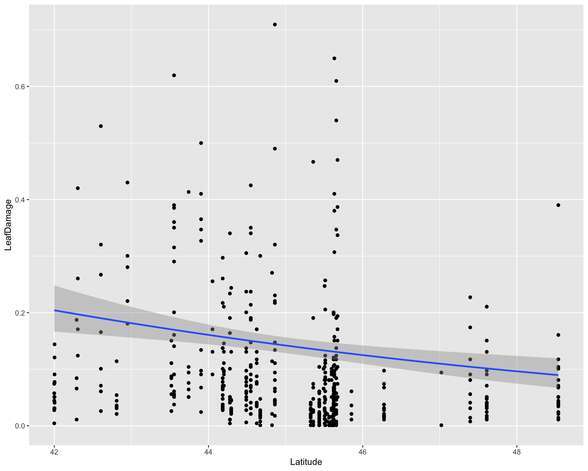
We can also make dot plots for the data using geom_dotplot().
ggplot(iris, aes(x=Species,
y=Sepal.Length)) +
geom_dotplot(binaxis = "y", stackdir = "center") 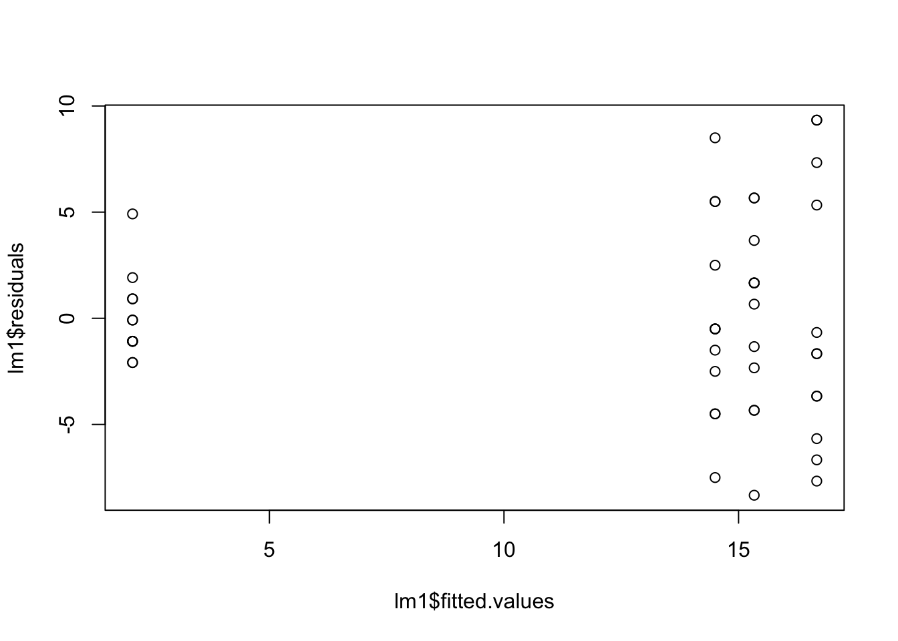
There are also violin plots with geom_violin().
ggplot(iris, aes(x=Species, y=Sepal.Length)) +
geom_violin(trim=F) 
A combination of violin plots with dot plots is also possible.
ggplot(iris, aes(x=Species, y=Sepal.Length)) +
geom_violin(trim=F) +
geom_dotplot(binaxis = "y", stackdir = "center") 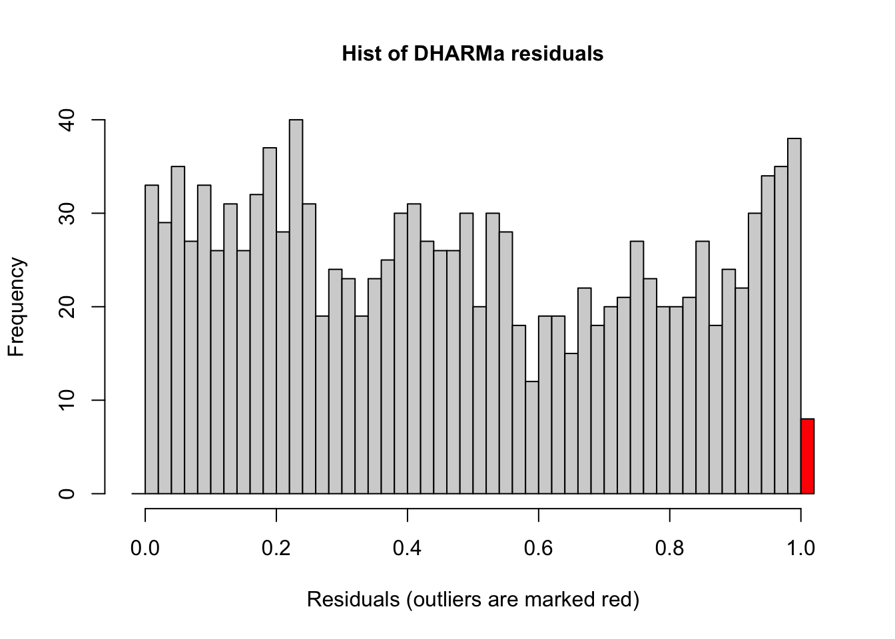
Finally, we can also do violin plots with boxplots!
ggplot(iris, aes(x=Species, y=Sepal.Length)) +
geom_violin(trim=F, bw=.5) +
geom_boxplot(width=.1)
2.1.4.1 Adding colors and summary statistics (e.g. averages) to plots
Let’s change the color of the boxes. Note we don’t use the “color =” argument but instead use the “fill =” argument. This is because fill will affect the fill color inside the box while color will affect the color of the border of the box. As such, when we use the viridis function for the nicer colors, we specify scale_fill_virdis rather than scale_color_virdis.
ggplot(iris, aes(x=Species,
y=Sepal.Length,
fill=Species)) +
geom_boxplot(outlier.shape=NA) +
geom_jitter(height=0, width=.15) +
scale_fill_viridis(discrete=T) 
If we want to see the averages or means per species we can do this by using stat_summary() and specifying “mean” with the “fun =” argument.
ggplot(iris, aes(x=Species, y=Sepal.Length, fill=Species)) +
geom_boxplot(outlier.shape=NA) +
geom_jitter(height=0, width=.15) +
scale_fill_viridis(discrete=T) +
stat_summary(fun=mean, geom="point", size=4, color="red") ## add point for mean
Let’s edit the theme of the plot above
ggplot(iris, aes(x=Species, y=Sepal.Length, fill=Species)) +
geom_boxplot(outlier.shape=NA) +
geom_jitter(height=0, width=.15) +
scale_fill_viridis(discrete=T) +
stat_summary(fun=mean, geom="point", size=4, color="red") +
theme_bw(base_size = 16) #theme change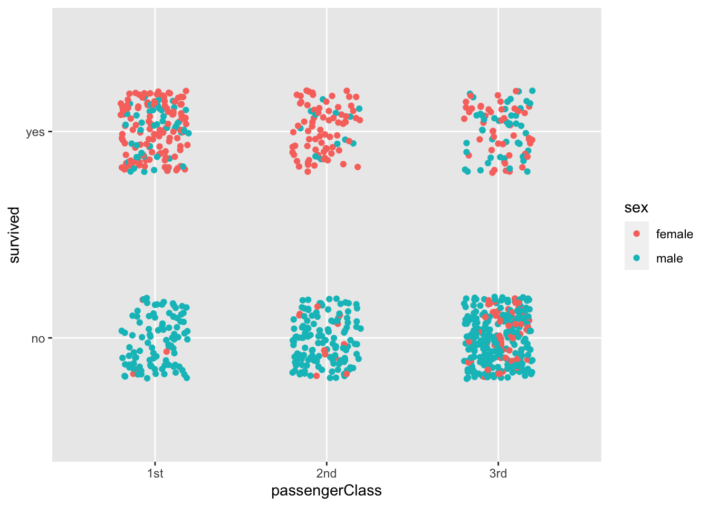
To save a plot like this as a .tiff we should first assign the plot as an object. In the example below we assign is as an object called “plot1” using the “<-.”
plot1 <- ggplot(iris, aes(x=Species, y=Sepal.Length, fill=Species)) + ## plot now saved as object called 'plot1'
geom_boxplot(outlier.shape=NA) +
geom_jitter(height=0, width=.15) +
scale_fill_viridis(discrete=T) +
stat_summary(fun=mean, geom="point", size=3, color="red") +
theme_bw(base_size = 16) Then we use ggsave() to save the plot into whatever working directory you are using. We can set the dimensions of the image and we specify the plot we want to save using “plot1.”
ggsave("ExamplePlot.tiff", #file name to be used
plot1, #what plot being saved
width=4, #width
height=3, #height
units="in", #units being used for width and height
dpi=300) #resolution of photo, higher number = better2.1.5 Breakout group challenge
For this challenge use the mtcars dataset:
data(mtcars)
head(mtcars)## mpg cyl disp hp drat wt qsec vs am gear carb
## Mazda RX4 21.0 6 160 110 3.90 2.620 16.46 0 1 4 4
## Mazda RX4 Wag 21.0 6 160 110 3.90 2.875 17.02 0 1 4 4
## Datsun 710 22.8 4 108 93 3.85 2.320 18.61 1 1 4 1
## Hornet 4 Drive 21.4 6 258 110 3.08 3.215 19.44 1 0 3 1
## Hornet Sportabout 18.7 8 360 175 3.15 3.440 17.02 0 0 3 2
## Valiant 18.1 6 225 105 2.76 3.460 20.22 1 0 3 1- Plot x=mpg by y=hp
- Color code points by wt
- Add trendline. Make the background white. theme_bw is okay, if time try playing around with other themes.
- Make a boxplot of mpg for the three cyl groups. You should have three boxes. If only one, why?
- Change colors, themes, add datapoints, etc.
2.2 1B. Introduction to Regression
2.2.1 An Example of Linear Regression in R
For this section we will use the tidyverse and car package. The functon to actually run a linear regression (lm()) is built into the base R libraries
library(tidyverse)
library(car)We should also set a seed to make things reproducible. This is because for this section we will generate random numbers to create a dataset that we can use to apply a linear model to. Because we want to make sure that the same random numbers are generated for all who use this, we can do this by setting a seed. If everyone uses the same seed they will get the same random numbers that are generated from the following code:
#Set Seed
set.seed(21)# Generate random data
temp <- round(runif(20,12,30), 2)
mass <- round(rnorm(20,5*temp,25), 2)
r1 <- as.data.frame(cbind(temp,mass)) This is the random data set:
head(r1)## temp mass
## 1 26.15 73.83
## 2 16.54 101.64
## 3 24.59 109.24
## 4 15.32 80.91
## 5 29.27 160.42
## 6 28.54 180.50Temp would represent rearing temperature in celsius and mass is the mass of adults in milligrams. Let’s plot this data
ggplot(r1, aes(x=temp, y=mass))+
geom_point()+
theme_bw()
Now let’s construct a linear model to estimate the average adult mass per degree C of temperature increase. For a continuous variable (temp in celsius), we are interested in estimating the slope between mass and temperature.
We can set up the model using lm(). The varibale specified before “~” is your response (mass in this case) and the variable specified after is your predictor (temperature in this case).
lm1 <- lm(mass~temp, data=r1) # all "calculations" are saved in an object we called 'lm1'We can construct an ANOVA table of this model. The ANOVA table tests the null hypothesis that the slope is different than zero. It’s not not super useful for regressions but useful to look at.
Anova(lm1, type=2) ## Anova Table (Type II tests)
##
## Response: mass
## Sum Sq Df F value Pr(>F)
## temp 13001 1 23.137 0.0001403 ***
## Residuals 10114 18
## ---
## Signif. codes: 0 '***' 0.001 '**' 0.01 '*' 0.05 '.' 0.1 ' ' 1To see the summary of the model (e.g. model coefficients) we use summary()
summary(lm1)##
## Call:
## lm(formula = mass ~ temp, data = r1)
##
## Residuals:
## Min 1Q Median 3Q Max
## -50.349 -13.588 0.361 15.668 45.873
##
## Coefficients:
## Estimate Std. Error t value Pr(>|t|)
## (Intercept) 9.8626 20.0788 0.491 0.62922
## temp 4.3716 0.9088 4.810 0.00014 ***
## ---
## Signif. codes: 0 '***' 0.001 '**' 0.01 '*' 0.05 '.' 0.1 ' ' 1
##
## Residual standard error: 23.7 on 18 degrees of freedom
## Multiple R-squared: 0.5624, Adjusted R-squared: 0.5381
## F-statistic: 23.14 on 1 and 18 DF, p-value: 0.0001403The coefficients allow you rebuild the means from the linear model equation: \[y = \beta _0 + \beta _1X \] For continuous variables these coefficients and p-values are very useful (unlike for categorical ANOVA). Ultimately, you don’t really need to look at ANOVA table or use emmeans for this type of analysis, everything of interest is in summary.
We can also look at the model coefficients with coef() or we can actually index the coefficients by using lm1$coef.
coef(lm1)## (Intercept) temp
## 9.862553 4.371578lm1$coef ## (Intercept) temp
## 9.862553 4.371578We can make a plot with the best-fit regression line and intercept.
ggplot(r1, aes(x=temp, y=mass))+
geom_point(size=3)+
geom_smooth(method="lm")+
theme_bw()
To check assumptions of the model, we examine residuals.
We can check normality of residuals with a histogram.
hist(lm1$residuals)
We can check the homogenity of the residuals by plotting the residuals against the model’s fitted values. The residuals should be evenly dispersed around 0 across the range of x’s. Funnel shapes or curvature in the dispersion would indicate violations.
plot(lm1$residuals~lm1$fitted.values)
abline(h=0) 
Using the car package we can also make a qqplot. Residuals should line up pretty closely to the blue line and points that drift from line may be outliers.
qqPlot(lm1$residuals)
## [1] 1 6To find out which specific points are outliers we can use leveragePlots().
leveragePlots(lm1) # codes points that may be outliersProblems with residuals indicate assumptions of the linear model are violated and may cause problems with coefficients and p-values. To alleviate potential issues transforming the data may help. It’s useful to note that assumptions can be slightly violated without causing problems.
We can also make a fancy plot of this model.
ggplot(r1, aes(x=temp,
y=mass)) +
geom_point(size=3,color='blue') +
geom_smooth(method='lm') +
labs(x = "Temperature", y = "Mass") +
theme_bw() +
theme(axis.title = element_text(face = "bold", size = 14)) 
2.2.2 Regression Challenge
Run the code shown above to answer questions regarding the orange dataset. The dataset has measurements of circumference on five trees at 7 time points.
data("Orange") ## load Orange dataset from base R
head(Orange) ## Grouped Data: circumference ~ age | Tree
## Tree age circumference
## 1 1 118 30
## 2 1 484 58
## 3 1 664 87
## 4 1 1004 115
## 5 1 1231 120
## 6 1 1372 142Healthy orange trees typically produce fruit at 100 cm in circumference. A homeowner calls and says their orange tree is 3 years old (1095 days), but isn’t fruiting. They didn’t measure it. They also said their are some white spots on the leaves.
Build a linear model (and make plot) to answer the following questions.
- What circumference should their tree be, on average?
- Should their tree be fruiting by now?
- What advice would you give the grower?
- Are the model assumptions met?
- Make a nice figure.
2.3 1C. Introduction to ANOVA
Let’s load the necessary packages
library(tidyverse)
library(car)
library(emmeans) # emmeans package, which is helpful for getting means from linear models2.3.1 Example of a one-way ANOVA in R
For this section we will use the insect spray dataset
data("InsectSprays")
head(InsectSprays)## count spray
## 1 10 A
## 2 7 A
## 3 20 A
## 4 14 A
## 5 14 A
## 6 12 ALet’s filter to just 4 treatments.
d <- InsectSprays %>% filter(spray=='A'|spray=='B'|spray=='C'|spray=='F') %>%
droplevels()Now plot the data.
ggplot(d, aes(x=spray,y=count)) +
geom_boxplot(outlier.shape = NA) + # need to suppress outliers if you jitter plot points
geom_jitter(height=0,width=.1) 
Let’s construct linear model to examine the effect of the different sprays on insect counts. For a categorical variable (spray with four levels), we are interested in comparing group means.
lm1 <- lm(count~spray, data=d) To compare group means we can use the Anova().
Anova(lm1, type=2) ## Anova Table (Type II tests)
##
## Response: count
## Sum Sq Df F value Pr(>F)
## spray 1648.73 3 26.478 6.091e-10 ***
## Residuals 913.25 44
## ---
## Signif. codes: 0 '***' 0.001 '**' 0.01 '*' 0.05 '.' 0.1 ' ' 1In the above case, the null hypothesis that all group means are equal. Specifying the argument, “type =,” to 2 provides Type II sums of squares, which is usually better than the default Type I, especially for more complicated models. Other functions (anova(), aov(), etc.) will provide similar ANOVA tables, but the Anova() is more flexible.
Let’s look at the summary of the model.
summary(lm1)##
## Call:
## lm(formula = count ~ spray, data = d)
##
## Residuals:
## Min 1Q Median 3Q Max
## -8.3333 -2.3750 -0.5833 2.0625 9.3333
##
## Coefficients:
## Estimate Std. Error t value Pr(>|t|)
## (Intercept) 14.5000 1.3152 11.025 3.02e-14 ***
## sprayB 0.8333 1.8599 0.448 0.656
## sprayC -12.4167 1.8599 -6.676 3.42e-08 ***
## sprayF 2.1667 1.8599 1.165 0.250
## ---
## Signif. codes: 0 '***' 0.001 '**' 0.01 '*' 0.05 '.' 0.1 ' ' 1
##
## Residual standard error: 4.556 on 44 degrees of freedom
## Multiple R-squared: 0.6435, Adjusted R-squared: 0.6192
## F-statistic: 26.48 on 3 and 44 DF, p-value: 6.091e-10Rebuilding the model from the coefficients is not super helpful and the p-values aren’t very meaningful.
Let’s use the package emmeans and the function emmeans which will rebuild the model for you. It will print off the means, SE, and confidence intervals for each treatment group
emmeans(lm1, ~spray) ## spray emmean SE df lower.CL upper.CL
## A 14.50 1.32 44 11.849 17.15
## B 15.33 1.32 44 12.683 17.98
## C 2.08 1.32 44 -0.567 4.73
## F 16.67 1.32 44 14.016 19.32
##
## Confidence level used: 0.95We can also look at pairwise differences between groups and automatically adjust p-values using “tukey” adjust.
emmeans(lm1, pairwise~spray) ## $emmeans
## spray emmean SE df lower.CL upper.CL
## A 14.50 1.32 44 11.849 17.15
## B 15.33 1.32 44 12.683 17.98
## C 2.08 1.32 44 -0.567 4.73
## F 16.67 1.32 44 14.016 19.32
##
## Confidence level used: 0.95
##
## $contrasts
## contrast estimate SE df t.ratio p.value
## A - B -0.833 1.86 44 -0.448 0.9697
## A - C 12.417 1.86 44 6.676 <.0001
## A - F -2.167 1.86 44 -1.165 0.6518
## B - C 13.250 1.86 44 7.124 <.0001
## B - F -1.333 1.86 44 -0.717 0.8899
## C - F -14.583 1.86 44 -7.841 <.0001
##
## P value adjustment: tukey method for comparing a family of 4 estimatesWe should also check assumptions of the model.
hist(lm1$residuals) ## residuals should be normally distributed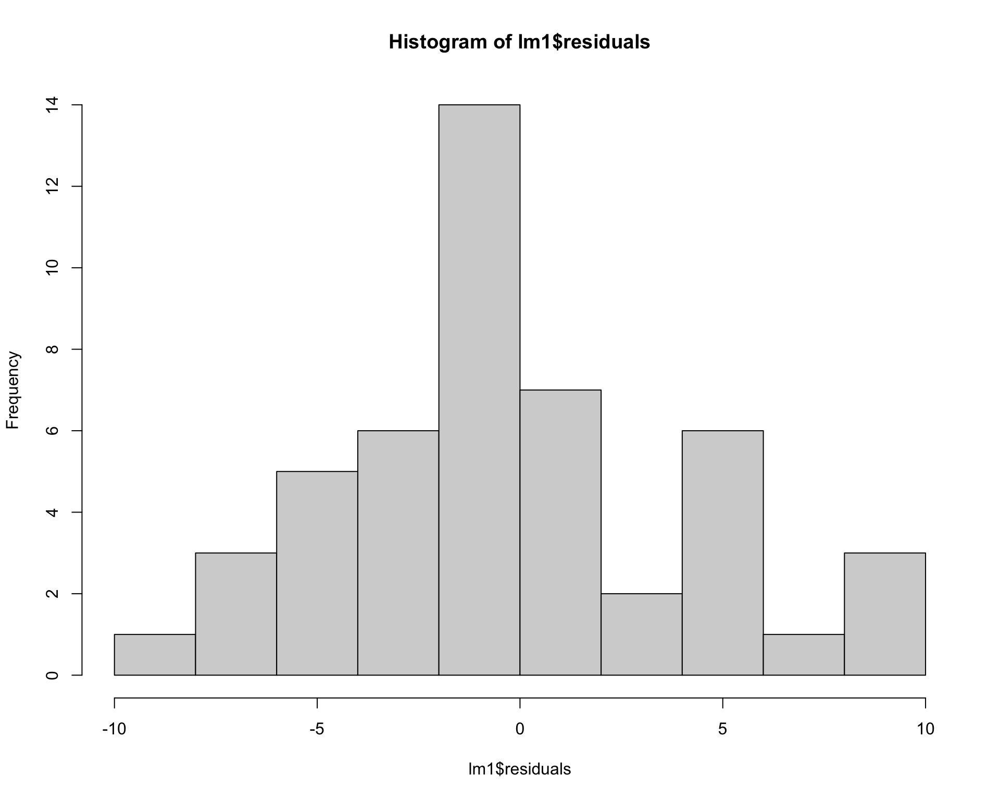
plot(lm1$residuals~lm1$fitted.values) ## residuals should be evenly dispersed
abline(h=0) 
qqPlot(lm1$residuals)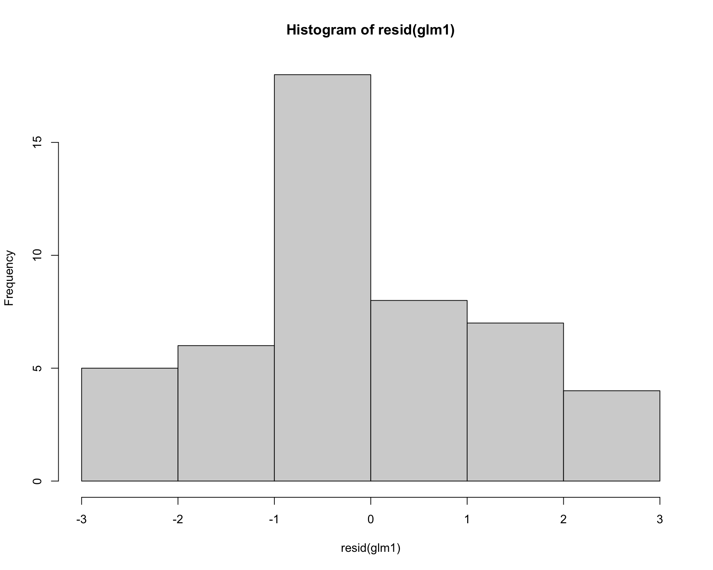
## [1] 45 46Boxplots of residuals across treatment types should show that the variances should be homogeneous for each group.
boxplot(lm1$residuals ~ d$spray) 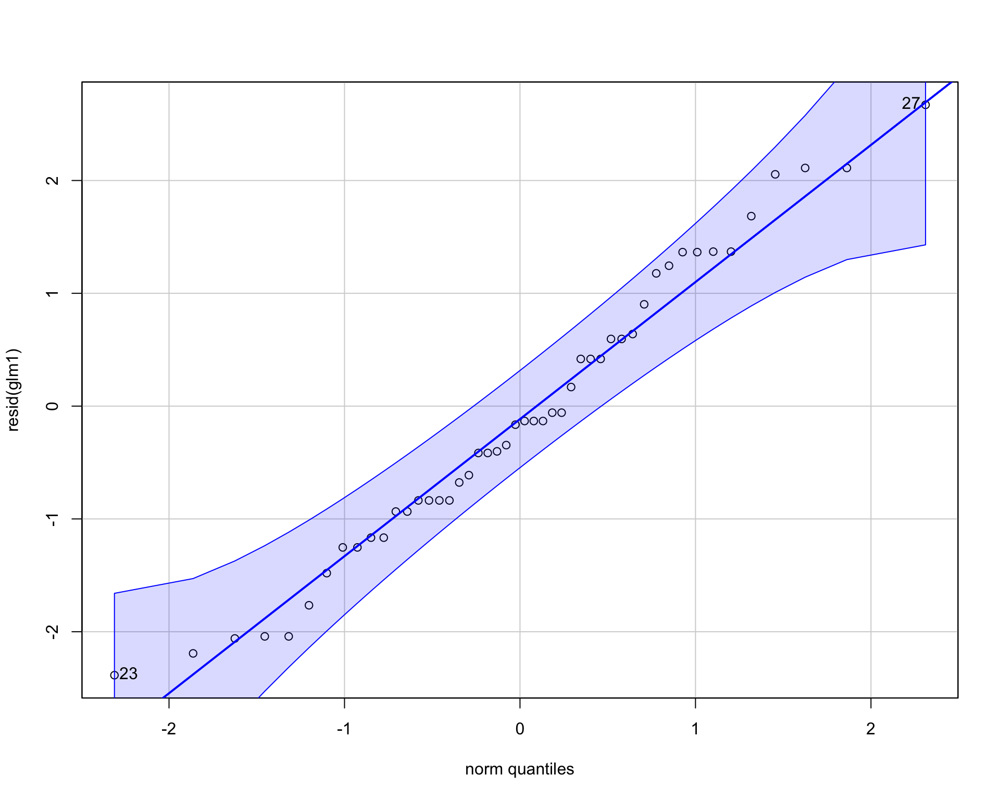
Problems with residuals indicate assumptions of the linear model are violated and may cause problems with coefficients and p-values. Transforming the data or using a different type of model may help (we will return to this example later in the course to improve it). Once again, assumptions can be slightly violated without causing problems, for example this model is seems passable but could be better. It is best practice to be transparent with residual diagnostics.
2.3.2 ANOVA Challenge
Have a look at the dataset below. Baby chickens were fed different diets and they were weighed after 10 days. The variable ‘weight’ is the weight of a baby chicken (g); ‘feed’ is the type of type of diet the chicken was fed.
d1 <- chickwts
head(d1)## weight feed
## 1 179 horsebean
## 2 160 horsebean
## 3 136 horsebean
## 4 227 horsebean
## 5 217 horsebean
## 6 168 horsebeanConstruct a linear model to analyze the data. Is there evidence at least one mean is different than another?
How much variation in the data does the model explain?
The feed ‘casein’ is the standard chicken diet. What types of feed are significantly worse than ‘casein.’ By how much are they worse?
Are the assumptions met?
Make a nice looking figure. show all the data.
2.4 Extra Data Visualization
This section covers some more advanced plotting with ggplots
Let’s load the necessary libraries or packages
library(tidyverse)
library(emmeans)2.4.1 Adding averages to plots part 2
In the previous section of data visualization we learned how to create a boxplot with averages based on species
ggplot(iris, aes(x=Species, y=Sepal.Length, fill=Species)) + geom_boxplot(outlier.shape=NA) +
geom_jitter(height=0, width=.15) +
scale_fill_manual(values=c("#E69F00", "#56B4E9", "#009E73")) +
stat_summary(fun=mean, geom="point", size=5, color="red")
We can construct a linear model to estimate means and standard errors of the means for plotting. First we construct the model.
sl1 <- lm(Sepal.Length~Species, data=iris)Then we use emmeans() to calculate the means and also pipe it as a data.frame.
sl_means <- emmeans(sl1, ~Species) %>% as.data.frame() ## saves emmeans as dataframe
head(sl_means)## Species emmean SE df lower.CL upper.CL
## 1 setosa 5.006 0.07280222 147 4.862126 5.149874
## 2 versicolor 5.936 0.07280222 147 5.792126 6.079874
## 3 virginica 6.588 0.07280222 147 6.444126 6.731874With the object sl_means we can make barplots with standard error bars.
ggplot(sl_means, aes(x=Species, y=emmean)) +
geom_bar(stat="identity", color="black", fill='grey') +
geom_errorbar(aes(ymin=(emmean-SE), ymax=(emmean+SE)), width=.2)We can tidy up the plot.
ggplot(data = sl_means,
aes(x=Species, y=emmean)) +
geom_bar(stat="identity",
color="black",
fill='grey',
width=.5) +
geom_errorbar(aes(ymin=(emmean-SE),
ymax=(emmean+SE)),
width=.2) + ## make bars thinner
geom_hline(yintercept = 0) +
theme(panel.background = element_blank(),
panel.border = element_rect(color="black",
fill=NA,
size=2)) + ## change "theme" so the background is blank and the border is thicker
theme(axis.ticks.length=unit(0.3, "cm"),
axis.text.x = element_text(margin=margin(5,5,5,5,"pt"),colour="black"),
axis.text.y = element_text(margin=margin(5,5,5,5,"pt"),colour="black")) + ## change axis tick marks to make them a little longer
theme(text = element_text(size=20)) We can also add points to the barplot.
ggplot() +
geom_bar(data=sl_means,
aes(x=Species, y=emmean),
stat="identity",
color="black",
fill='grey',
width=.5) +
geom_errorbar(data=sl_means ,
aes(x=Species,
y=emmean,
ymin=(emmean-SE),
ymax=(emmean+SE)),
width=.2) + ## make bars thinner
geom_jitter(data=iris,
aes(x=Species,
y=Sepal.Length),
height=0,
width=.15) +
theme(panel.background = element_blank(),
panel.border = element_rect(color="black",
fill=NA,
size=2)) + ## change "theme" so the background is blank and the border is thicker
theme(axis.ticks.length=unit(0.3, "cm"),
axis.text.x = element_text(margin=margin(5,5,5,5,"pt"),
colour="black"),
axis.text.y = element_text(margin=margin(5,5,5,5,"pt"),
colour="black")) + ## change axis tick marks to make them a little longer
theme(text = element_text(size=20)) 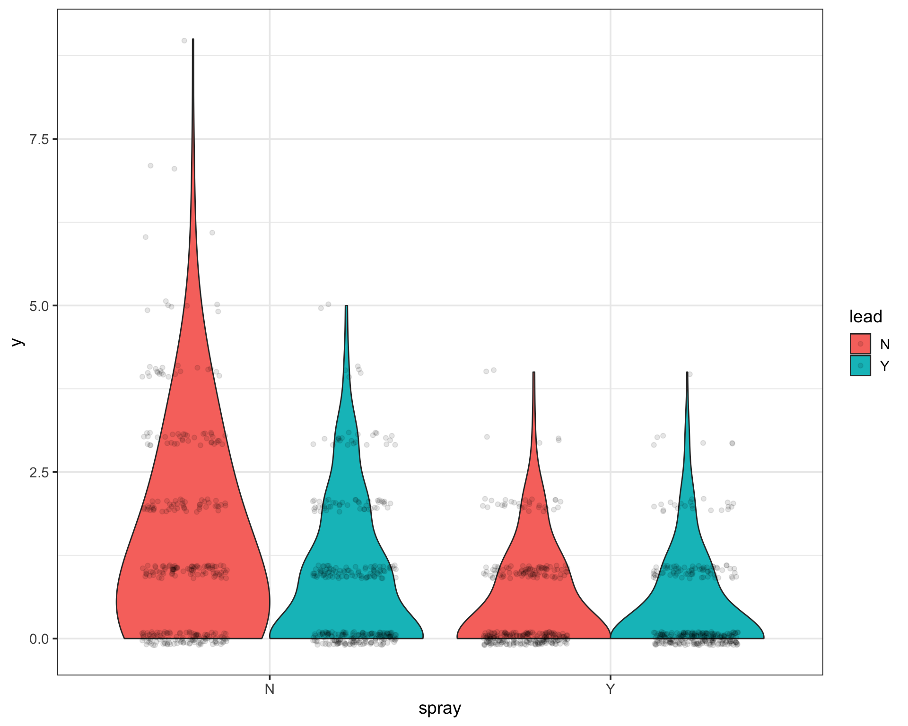
We can also try a dot plot with standard error bars.
ggplot() +
geom_jitter(data=iris,
aes(x=Species,
y=Sepal.Length),
height=0,
width=.1) +
geom_point(data=sl_means,
aes(x=Species, y=emmean),
color="red",
size=5) +
geom_errorbar(data=sl_means,
aes(x=Species,
y=emmean,
ymin=(emmean-SE),
ymax=(emmean+SE)),
width=.2,
color="red",
lwd=2) + ## make bars thinner
theme(panel.background = element_blank(),
panel.border = element_rect(color="black",
fill=NA,
size=2)) + ## change "theme" so the background is blank and the border is thicker
theme(axis.ticks.length=unit(0.3, "cm"),
axis.text.x = element_text(margin=margin(5,5,5,5,"pt"),colour="black"),
axis.text.y = element_text(margin=margin(5,5,5,5,"pt"),colour="black")) + ## change axis tick marks to make them a little longer
theme(text = element_text(size=20)) 
2.4.2 R Challenge
From R file 1c_R Intro_anova #5. Make a nice looking plot that includes the mean and SE of chick weight for the six feeds.
Try making a boxplot with jittered points and then overlay the mean +/- SE in a large dot of a different color.
Try changing the color of each box. Customize the colors, themes, etc. to make it look nice and readable.